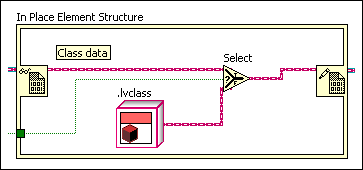
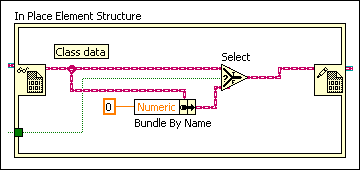
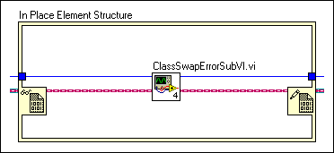
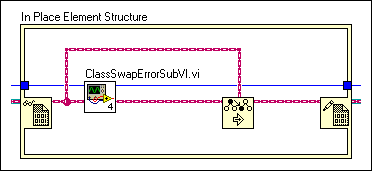

Although you can modify the class object inside a reference, you cannot substitute the class object for another object, even if the object belongs to the same class. This restriction prevents you from changing the data type of the object in the reference.
To correct this error, make sure all wire sources of the Data Value Reference Write Element border node of a class reference originate at the corresponding Data Value Reference Read Element border node.
Sometimes, the substitution of one class object for another can occur within a subVI or call chain. For instance, LabVIEW cannot guarantee that a new dispatch subVI loaded at run time will not swap out the data value reference class object.
To correct this error, use the Preserve Run-time Class function to check the class type at run time.
